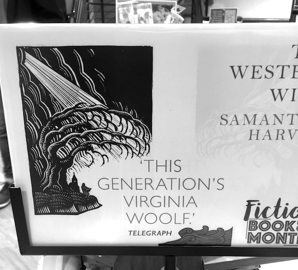

23th of January, 2022
- I imagine if you read Homer’s Odyssey, you hated it as much as I loved it. I won’t make the case for it as Margaret Atwood ruined it for me too in her novella The Penelopiad. She retells the famous story from the perspective of Odysseus’ wife pointing out the gross injustices with a whimsical language. I bet you’d enjoy it as much as I did. Her voice reminded me of you.
16th of July, 2021
Not all interludes last five minutes.
- La Tortue Rouge (2021). It is poetry but in the form of animation. It would appeal to you.
29th of July, 2019
- Gin, Sex, Malaria, and the Hunt for Academic Prestige by Charles King. Not the greatest piece of writing or the content, but some interesting insights about our nature and our surroundings.
10th of July, 2019
I apologise for the morbidity and the repetition in advance,
Soon after we met, I finished Borges’ stories and essays. Then came a one-page parable called The Witness. That along with our conversation triggered a number of thoughts, connections, and (re)recommendations.
The parable is about death and precisely the death of events and ideas that are witnessed by the recently deceased. I was astonished how close that was to what we talked about, people living as an image in others’ minds and how true death follows long after that of the body.
Borges does not take it as far as I did though, his parable kills things with the last person who witnessed them directly while I allow them to get evolved, deformed, and passed through generations and distances far from their originator.
I’d like to think that my mind went further than that of Borges, but the truth is it didn’t. The idea is mainly derived from I Am A Strange Loop by Douglas Hofstadter. This is the book that made me stop eat meat. He is mathematically minded, but also emotionally elevated like Borges. The second chapter is titled On Souls and Their Sizes, which starts with the section Soul-Shards. You know I like analogies but the concept of a soul-shard is etched into my brain the moment I laid eyes on it. The chapter talks about his relationship with his wife who passed away and how an unfaithful copy of her (shards of her soul) lives in him and influences his actions, so in a way she keeps living. He admits the probability of a grieving man coming up with a theory of consciousness that gives him some solace, but I buy it.
This brings me to the final scene of The Sheltering Sky (and the ending of the book of the same title which I have not read) directed by Bernardo Bertolucci. An old man says the following passage:
Because we don’t know when we will die, we get to think of life as an inexhaustible well. Yet everything happens only a certain number of times, and a very small number really. How many more times will you remember a certain afternoon of your childhood, some afternoon that is so deeply a part of your being that you can’t even conceive of your life without it? Perhaps four or five times more, perhaps not even that. How many more times will you watch the full moon rise? Perhaps twenty. And yet it all seems limitless.
I feel the urge to recite this passage in my head from time to time. I haven’t always behaved this way and that’s a loss, but for some time now (even before I knew you) I’ve been making mental notes of things that matters. That is why I waited for your bus to leave at Parker’s Piece and watched you quietly. It’s also why on that special Saturday as I looked at you, you had all my attention, all my mental might trying to save every second of the day, especially when you were quietly immersed into my friend’s music. All so that I can remember it faithfully for finite number of times.
Ryuichi Sakamato who scored the soundtracks for The Sheltering Sky was similarly moved by that passage. That’s why many years after scoring the movie, he recorded fullmoon which has the passage read in many languages. He overlays these recordings with ambient music in the background to create a touching piece.
He discusses this and his general approach to music in the documentary Ryuichi Sakamoto: Coda. He has a kind soul and the documentary is one of the best I’ve ever seen. Mainly because I believe in the honesty of what is on the screen. It shows him deal with cancer and his spiritual devotion to his work. It tells the story of the damaged piano rescued from the tsunami in Japan and the concert he gave with it and why. It is a worthy portrait to see.
In a way, he is similar to Hayao Miyazaki. Maybe there is something unique in Japan’s culture that bestows kind people with a wisdom that is not paralleled elsewhere in the world. Maybe I’ll have to learn to be kinder and go there to see for myself.
That’s all for now. Lights are out, music is over.
PS. I decided to curb my wings further and actively avoid looking at the analytics for this page. I don’t want you changing your habits because I might see it.
5th of July, 2019
Cardinals, Hair, The Knowledge, Later and I Walk Away by Lele Marchitelli. Apparently, she is the new go-to person of Paolo Sorrentino, the director of two of my favourite films, La Grande Bellezza and Youth.
The first four of those songs are from the soundtrack album of The Young Pope. I’ve only seen the first episode, but so far it is everything we would like. It is stylish, decadent, and clever both in writing, acting, and cinematography.
3rd of July, 2019
La Joya and Reframe by Aukai. The whole album, Reminiscence, is nice and mellow like a summer day spent on a hammock with the exception of Reframe. That sounds more like a love affair.
There is a small village in Turkey where a whistled language is, well, whistled. The village is named Kuşköy which literally means the village of birds. Here’s a video explaining the whole affair. It is very unreasonable of me, but I want to go and learn their dialect.
Where I stand, it sounds like a thinning of spoken languages and I find it fitting that it is more musical. Songs too communicate way more than their lyrics alone, don’t they? So maybe if we thin the whistled language further, we may communicate with silence.
Also if you look at the entry for 17th of February, 2019, you will see my recommendation for Paterson, the movie I mentioned about the bus driver poet.
29th of June, 2019
- It was nice running into you today.
- The Cell by David Allred. It is contemporary folk apparently.
21st of June, 2019
Spanish Caravan by The Doors.
Carry me Caraban take me away~~ Take me to Portugal, take me to Spain~~ Andalusia with fields full of grain~~ I have to see you again and again~~
I’m off to Phoenix and then to LA, so no posts until next week. Enjoy the sun for me, would you?
19th of June, 2019
On multiple occasions, you asked me if I resented you. You were so far off the mark every time. However, about five or six months ago I did come close.
I was idly browsing titles in Waterstones and in a stroke of luck, A Room of One’s Own caught my eye. I thought what a funny curious title it had. At that point, I was still of the opinion that Virginia Woolf owes her fame to being a feminist. How wrong I was. I don’t think I know anyone whose use of language and conviction are as captivating. Thinking that it was possible (even probable) that I would have ignored her for the rest of my life out of ignorance is terrifying. What a waste it would have been.
The reason I almost resented you is, out of everyone I know, you were the person who should have picked up a copy of the book, smack me in the head with it, and tell me to read it. I’d have read it and I’d have been grateful. Having known you, my introduction to Woolf shouldn’t have been by chance (though I’m sure subconsciously you’re partly the reason I bought A Room of One’s Own that day).
When you told me you were going to teach and that you are sick of being poor, six months ago I would have objected vehemently (not that you should care) from the top of my high horse. However, as I read your message the first thing that appeared in my mind was that everyone needs a room of their own and £500 a year (adjusted for inflation since Woolf’s time). My opinion now (in part thanks to Woolf) is that maybe once you can breathe freely, you can make your voice heard louder. Maybe that is all you need.
This brings me to the other title I finished reading last week, The Death of the Moth and Other Essays. I’m weary of suggesting you a Woolf title, of course. It’s dangerously close to mansplaining, but it seems this collection of essays is seldom found in bookshops and discussed even less. They have been posthumously published by her husband.
Half the essays are about great men of letters. I don’t think you’d like those. They wouldn’t bring tears to your eyes as reading Schopenhauer once did, but I don’t see you taking joy in reading them either. The other essays are, however, way more fascinating. In particular, the titular essay The Death of the Moth is maybe the peak of modernism. She writes about the last hours of a moth that she watched as it tried to escape through the window, but couldn’t due to the glass blocking the way. In a subject seemingly dull, she fully describes life with eloquence. Joyce’s quote “in the particular lies the universal” fully captures this essay. A close second in the collection is Street Haunting which describes her wandering in the streets of London at night. It is a wonderful journey and I think it will speak to you. It is the kind of wondering that would render you joyous. Then there is Middlebrow and Professions for Women, in which fire comes out of pages unapologetically. I don’t think the latter essay will be useful to you because you have already killed your angel, but it is still enjoyable to read her go at it. Finally, there are Why?, Craftsmanship and A Letter to a Young Poet. As I’m sure you can tell, these are all about writing and language. They may or may not have utility for you, I can’t judge. However, I do think you’d enjoy reading them regardless just as I enjoy reading a well-written essay on mathematics even when the content is second nature.
On other news, my move is now complete. The room speaks to me. As if all these years it was calling for me. Now with my arrival, I feel the space around me is in unison with my actions. The perfect place to write a book, which is fortunate because that is my task for the next three months.
16th of June, 2019
- Ballata dell’amore cieco by Fabrizio de André
- Good luck with the move this week. You helping me with my last move was pure and very kind. I appreciate it. I hope everything goes smoothly.
14th of June, 2019
- Plaisirs d’amour by René Aubry. That’s the album we listened to in that bay I sent you the photos of. What is not captured in pictures can be heard in the melody. Maybe start with Salento, Scirocco, and Sirtaki à Helsinki.
2nd of June, 2019
I don’t know if you have any idea why I maintain this page. I personally have eight reasons on odd days and more on even days and today is an even day. I’ll give you one.
If I were a fire, the entries on this page would be the little cracking bits that leave the main body of the fire. Not because they want to, but because they have to. They are the bits that could not be contained. But a little cracking bit of the fire is not the fire, merely a fraction of a fraction of a fraction.
The reason I’m telling this right now is I won’t have an Internet connection next week. I’ll be up in the mountains and down by the bays and back up again, walking. An eroding unfaithful copy of your self that is in my mind will be there too (without the hassle of walking of course). Without a doubt, I’ll see a bird, or a rock, or the glorious sea curving just right. It too will be a little bit of fire that I’d like you to feel, but I can’t make you feel. If I could share them, I would, but you can’t truly share a moment in a different moment, can you?
What I’m trying to say is I wish you could see through my eyes and think my thoughts.
Daydream by Wallace Collection
1st of June, 2019
Edvard Munch: love and angst exhibition in British Museum. I attempted writing this entry and failed. I find it surprisingly difficult to be honest and if I’m not being honest, what’s the point?
I desperately want to say I understand how Munch feels and that his soul through his work resonates with me. I look at the other museum visitors as if they are not worthy of enjoying the same artwork I’m looking at, the way someone like Holden Caulfield would do. Then again who am I to understand Munch? I haven’t lost my mother at two or my sister at thirteen. Their memory hasn’t haunted me for years to come. Yet it connects with me when he says “sickness, insanity and death were the angels that surrounded my cradle and they have followed me throughout my life.”
I also know the feeling of a lover facing away from me as her hair extends to my heart (Separation II). I know the fusion and the intensity of The Kiss. I also saw brilliance through darkness as he did when he painted Eva Mudocci in The Brooch. If you just look at the corner of her mouth, you can see how much he loved her.
I’m sure you’ll enjoy it for entirely different set of reasons. Perhaps for his poetry that binds all his works or the intensity eminating from his female figures. In any case, it’s worth your time.
27th of May, 2019
- La Double Vie de Véronique by Krzysztof Kieślowski. There are no shortage of reasons why you’d like this movie, but its poetry and the scene she sings Van den Budenmayer: Concerto en mi mineur by Zbigniew Preisner should be enough on their own.
24th of May, 2019
- Beggarstaffs exhibition at Fitzwilliam. It is worth going for their earlier works alone. They are effortless and timeless. The later works involving architecture are also pleasing. Structures can be more expressive than us mortals.
Always
- I love you and I miss you.
18th of May, 2019
- Motion by Rone
14th of May, 2019
Not so much of a recommendation,
but a little old fact
you'll either like
or hate.
People in my group
will
read _your_ name
for a decade.
There is a poster
of the paper
that I can truly call
_my_ own.
On it,
there is an example:
_Rebecca_.
Hung on a wall
in our group corridor
where the turnaround is a decade.10th of May, 2019
- Otto by Woodkid
- Einstein On the Beach: Knee Play 5 by The Philip Glass Ensemble. Here’s weird for you. This is from the only opera I want to see.
8th of May, 2019
- I saw Cloud Atlas maybe four times (twice in the cinema for good measure) and I love the story—how can I not? It’s so intertwined and it features Cambridge. Moreover, it has one of the gentlest scores I know of. I’m fond of Cloud Atlas Opening Title, Travel to Edinburgh, Kesselring, and Cloud Atlas End Title in particular. I wonder if it is obvious to you which of those appeals to me the most.
6th of May, 2019
Sunny by Bobby Hebb
I wanted today to do justice to the song, but to no avail. My celestial powers fell short. Luckily, you don’t lack imagination, so perhaps picture yourself in a serene summer’s day either chilling under the shade of a tree or having a coffee in a little Italian town.
I think a good birthday message is less about the wishes and more about celebrating the highlights of your past age. For me, this makes finding the source material a rather difficult task, so I’ll keep it short. It puts my heart at ease to know that you have achieved, in your words, a happy ending. My wish is that it trancends to a happy being.
4th of May, 2019
- I think I favour Nina Simone’s Don’t Let Me Be Misunderstood over Feeling Good.
29th of April, 2019
- Machin Feast at Queens’ on 10th of May. The deadline for applications is tomorrow 10pm. I hear there is good company.
28th of April, 2019
- A Dream within a Dream by Oren Lavie. Have a peaceful Sunday darling.
27th of April, 2019
- How Anna Delvey tricked New York by Jessica Pressler. The writing is mediocre at best, but the story is silver and it is shined by its reality. It would be a delight if you lended your voice to a fictional Anna Delvey.
- The natural follow up recommendation would be my favourite film in the whole world. I’ve already told you about it in person and you weren’t terribly interested, so maybe I should spare you. In any case, although you didn’t realise it at the time, my sharing of that film with anyone is deeply personal. I wouldn’t write it down anywhere—I realise as I write that, this is the polar opposite of what you’d do.
20th of April, 2019
- Microhabitat directed by Jeon Go-Woon. It’s an honest story. The protagonist presents an ideal without glorifying the cost of being true to yourself. She, dare I say it, reminds me of who you could be. If you watch the trailer, I promise the film offers more than that.
PS. Do you like the commentary that goes with the recommendations?
14th of April, 2019
- Can’t Stop Running by Adam Ben Ezra. I love this one. You’ll love this one.
11th of April, 2019
- Asturias by Isaac Albeniz. I’m sure you listened to it many times before, but I just realised how much the player influences the emotional outcome. Here’s the father of classical guitar Andres Segovia playing it. He lacks Albeniz’s vigour but adds tranquility. Then there is Ana Vidovic not so much playing distinct notes, but gliding from one to another.
- The Song of the Golden Dragon by Estas Tonne. A piece not to enjoy but to be overwhelmed.
- Celestial Intoxication by Shpongle. Maybe not the most skilfull, but to me the most interesting one. It covers the largest emotional ground. I’m sure you know when to listen to this one.
5th of April, 2019
Caprice by Worakls. Not your genre, but it fits the first week of April rather well.
Like Thylacine, Worakls too names songs after places. I like the idea. I want to hear a good Istanbul and a Marrakech. It might take a while.
31st of March, 2019
The Fall directed by Tarsem Singh. I don’t know how it hasn’t occurred to me to suggest it to you until now. It’s dramatic just in the way you’d like and its visual aesthetic is just the way I like.
The trailer on Youtube reveals too much though. So may be take a leap of faith?
Black Sands by Bonobo
Champion Sound by Crystal Fighters. This one is when you’re in a good mood. It’ll boost it, I promise. The whole album is interesting, the lyrics are not always uplifting, but the melodies are.
26th of March, 2019
Zima Blue is the 9th episode of the short animation anthology on Netflix. It’s based on a short story written by Alastair Reynolds. I like the message of course, but I think you’d enjoy the narration more.
A less pronounced message is that our reasoning and perception are noisy and often far from the reality. You can relate to that, can’t you?
Ayayay by Tony Tonite
I found the perfect song to suggest to you on your birthday.
PS. Honestly, I have a lot to say about your recent story, but not here. At least, I can say that I read it all with a genuine smile on my face.
24th of March, 2019
- Aurora by Zero 7
- Curls and Petals by Bibio
15th of March, 2019
- They don’t know what I know.

6th of March, 2019
I can hear the music today. It’s so gloomy outside, yet everything I see shines a bit brighter.
I can’t believe I haven’t recommended you any Four Tet songs so far. Maybe because I thought you’d find them too electronic. The problem with not seeing someone for a long time is that you start losing the provenance of impressions, which is the best bit of knowing anyone or anything, don’t you think?
Anyway, here are three: She Moves She, Locked, and Two Thousand and Seventeen. If I were to see these as an envelope produced by a single synthesiser and not as individual songs (and in a sense that is the case), they’d correspond to attack, sustain, and release. They work well in that order. It should really have decay between attack and sustain, but we have too much of that elsewhere.
29th of February, 2019
- Le Roi et l’Oiseau (1980) directed by Paul Grimault. This is an animated movie that took more than 20 years to complete for various reasons. It is done in collaboration with the poet Jacques Prévert. More than a dozen times, the movie manages to invoke the sublime through its artwork. The interactions between its bizarre characters are captivating despite the simplicity of the plot. To me, it is one of the more tasteful surrealist works of cinema.
26th of February, 2019
- It’s another sunny day and that calls for another song from the past. California Dreamin’ by The Mamas & The Papas.
25th of February, 2019
- Aquarius (Let the Sunshine in) by the 5th Dimension and Her Morning Elegance by Oren Lavie. I know you know them both, but they fit the day and you so well, wouldn’t you say?
- Enjoy the sunshine.
17th of February, 2019
- You mentioning poetry reminded me of Paterson (2016) by Jim Jarmusch. It is a slow-burning film about a poet. I told you this before, I cannot feel poetry unless it is in Turkish. Some recitations in this movie are exceptions to that. Jarmusch is also the director of Only Lovers Left Alive, Dead Man, and Coffee & Cigarettes (more like the last short film that we liked and less like the others). Hopefully, that gives you an idea.
- What I said about not talking about our lives is a good principle, but when you need me to be there for you, just tell me and I’ll listen.
- It felt good.
13th of February, 2019
- Before You
LoveLeave by Frenic, so that you can dance on your own. - Summon the Fire by The Comet is Coming. Just some good modern Jazz.
- Finally, there’s a song by a good friend of mine. It has no lyrics, but the journey it takes you could not have been clearer if it was spelled out. I’d have liked you to listen to it, but I don’t know how.
3rd of February, 2019
- Travel Alone by Dr. DAD. Not only it puts me at ease as I’m listening to it right now but also, just a moment ago, as I was still listening to it, I created something elegant. If I’m right, its effects will echo way beyond my PhD. From now on, at least in my mind and completely incidentally, everything that follows from it is going to be linked to this song.
- To Save the Sound of a Stradivarius, a Whole City Must Keep Quiet by Max Paradiso. The decadence in this story is going to make you a bit uncomfortable, but it’d be difficult for you not to like it deep down.
19th of January, 2019
- There is a new album of Thylacine called ROADS, Vol. 1. In nature, when a force is acted upon a body at its natural frequency, the body resonates with greater intensity. This describes nicely how this album makes me feel. You can start with El Alba.
15th of January, 2019
- Persona (1966) by Ingmar Bergman. There is no doubt, you’ll love this film. They are showing it in the Picturehouse on Thursday. I know you’re not reading this, but I wish you did and… You should give him a go some time.
- Winter Sleep by Bongbeck. As it happens, Winter Sleep is also the name of my favourite Nuri Bilge Ceylan film.
- Maa’asalama by Traumer
21st of December, 2018
- We’re sufficiently close to the end of the year that I can announce Kingdoms in Colour by Maribou State as the best album of the year. You can start with Feel Good, then Kama, followed by Part Time Glory, but you should really listen to the whole thing. It’s a real treat.
- Just in case you’re craving some electronic jazz blend, you can try Amateur Girlfriends Go Proskirt Agents by Xploding Plastix. I swear I haven’t noticed the ridiculous album and band names until now. Within the album Sports, Not Heavy Crime would be a good start.
- Also, I trust you’re in warm company that pierces through the cold and dark days we are going through. Do enjoy the festive season.
3rd of December, 2018
Bertolucci died two weeks after I recommended you the Sheltering Sky. Call me superstitious, but I’m sceptical about recommending you another one now. Yet, here I go. The Great Pear Tree by Nuri Bilge Ceylan. It’s about a fresh university graduand trying to publish his first book. He’s trapped by worldly problems such as family and money. He’s not exactly what you’d call a protagonist and his concerns are different to yours when it comes to writing. I still think you’d find it insightful.
Its director is my favourite Turkish one alive. His movies are beautiful and capture the Turkish human condition without any pretence. Maybe give it a try. I hesitate recommending him to anyone because his movies are slow-burning and long. I regret doing that with you. So here it is.
I’m horrible at being subtle, ain’t I? This is the third movie about a writer I recommended to you. Allow me to be more direct, I hope you’re writing every day and I hope people get to hear your voice some day. It’d be a great crime otherwise.
Suspiria (2018) by Luca Guadagnino. This is the guy who directed Call Me by Your Name last year. It was beautiful and very unexpectedly turned into a great feminist statement. I know you can’t stand gore, but if you can stomach it for once, let it be for Suspiria. If this is not enough of a pitch, Tilda Swinton is in it and she reigns supreme as she always does. It’s screening at the Picturehouse right now and the big screen only renders it more beautiful.
In case you decide, you can’t (won’t) stomach it, then at least watch the predecessor to Call Me by Your Name, I am Love. Swinton is leading and you’ll identify with her character perfectly.
I don’t think you’d like Haruki Murakami. He’s focused too much on unpacking the individual and deals with solitude and isolation and alienation like Kafka but with a different tone. But there is one undeniable benefit of reading him and that is his past self. He ran a Jazz bar in Tokyo for many years you see. So he sprinkles his pages with great Jazz albums, real treats. One such album is Curtis Fuller’s Blues-Ette, in particular Five Spot After Dark.
14th of November, 2018
The Sheltering Sky directed by Bernardo Bertolucci.
Cinematographically, it may be one of the most pleasing films I’ve ever seen. I think you’d enjoy the serenity of Africa as much as I did. Yet, way more than the images, you’ll enjoy the characters (played by Debra Winger and John Malkovich) and their rather impossible situation. It is the kind of film that makes you read the book. It also has one of my favourite passages in a film; I’m sure you can figure out which. If this is not good enough sales pitch, its soundtrack is composed by Ryuichi Sakamato and the corresponding soundtrack album is a masterpiece on its own right.
Becoming by Mammal Hands
Vous Dansez by KZA
6th of November, 2018
- Twenty-Four Hours in the Life of a Woman by Stefan Zweig. I don’t remember any other story I’ve read with more vivid imagery.
29th of October, 2018
- Yazz Ahmed concert in Cambridge Jazz Festival on the 18th of November
- Klimt/Schiele exhibition in Royal Academy or Arts from November 4th
- Thylacine’s new single called “The Road”
- “Stranger than Fiction” is a precursor to “Dans la Maison”. It is magical realism which is not your cup of tea, I know, but still worth seeing.